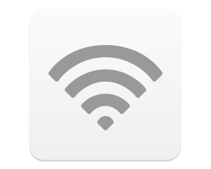

Vuoi attivare la Wi-Fi?

- L'attivazione della connessione Wi-Fi consente di accedere a tutti i contenuti del dispositivo senza dover
collegare il cavo USB. - Affinché iMazing possa accedere automaticamente ai dispositivi, questi devono essere collegati
alla stessa rete Wi-Fi a cui è collegato il computer. - Il cavo USB può essere collegato o scollegato in qualsiasi momento durante il trasferimento, poiché iMazing è in grado di passare automaticamente dal cavo USB alla rete Wi-Fi.